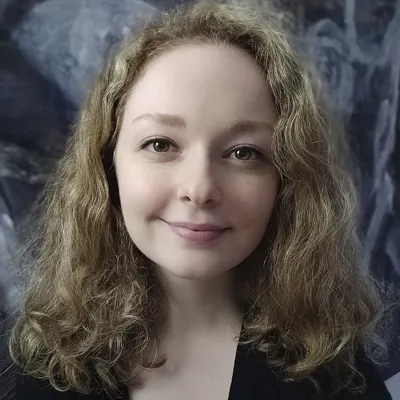

Berfin Sakallioglu
PhD Student
berfin.sakallioglu@gmail.com
berfin.sakallioglu@phd.units.it
I’m a PhD student* in Applied Data Science and Artificial Intelligence at the University of Trieste, Italy, working under the supervision of
Prof. Eric Medvet and
Prof. Luca Manzoni.
I’m a member of the
Evolutionary Robotics and Artificial Life Lab.
My research focuses on transparency and learning for intelligent evolutionary systems.
I work with various forms of genetic programming (GP), including grammatical evolution (GE) and geometric semantic GP (GSGP).
This involves combining them with large language models (LLMs) to enhance interpretability and optimization.
Representations of these methods, their applications in healthcare and robotics, and their learning behavior are also central to my work.
Beyond research, I greatly enjoy university-level teaching.
Outside of academia, I do music. My life's passion is singing and playing guitar.
I also like learning
languages and reading about evolutionary biology, psychology, and neuroscience.
*my end of 1st year poster
Publications
Berfin Sakallioglu, Giorgia Nadizar, Luca Manzoni, Eric Medvet
Conference Paper, Graph-based Genetic Programming Workshop (GGP@GECCO), 2025
Eric Medvet, Giorgia Nadizar, Michel El Saliby, Francesco Rusin, Berfin Sakallioglu
Conference Paper, 5th Convegno Nazionale CINI sull'Intelligenza Artificiale (Ital-IA),
2025 (to appear)
G. Nadizar, B. Sakallioglu, F. Garrow, S. Silva, L. Vanneschi
Journal Article, Genetic Programming and Evolvable Machines (GPEM), 2024
G. Nadizar, F. Garrow, B. Sakallioglu, L. Canonne, S. Silva, L. Vanneschi
Conference Paper, ACM Genetic and Evolutionary Computation Conference (GECCO), 2023
Berfin Sakallioglu
MSc Thesis, 2023
Education
- PhD – Applied Data Science and Artificial Intelligence, University of Trieste,
2024–Present
Research Field: Evolutionary Computation
- MSc – Data Science & Advanced Analytics, NOVA Information Management School,
Portugal, 2020–2023
Thesis: A Study of Geometric Semantic Genetic Programming with Linear Scaling (20/20) | GPA: 18/20
- BSc – Electrical & Electronics Engineering, Hacettepe University, Turkey,
2015–2020
Honors Student | GPA: 3.21/4.00
Conferences
- ACM Genetic and Evolutionary Computation Conference (GECCO) – Málaga, Spain, July
2025
- 28th European Conference on Genetic Programming (EuroGP) – Trieste, Italy, April 2025
- ACM Genetic and Evolutionary Computation Conference (GECCO) – Lisbon, Portugal, July 2023
Schools
- SIGEVO Summer School – Málaga, Spain, July 2025
- DataSLO: Summer School on Data Science, Learning and Optimization – Norcia, Italy, June 2025
- SPECIES Summer School – Moraira, Spain, August 2025
Achievements
- FCT PhD Scholarship (3rd Place National Rank 2024) – Awarded by Portugal’s national
research agency FCT
Proposal: Evolutionary Computation for Explainable and Interpretable Medical Decision
Making
Teaching Experience
Invited Lecturer – NOVA IMS, Portugal
(with average student perception
5.8/6 across
all courses)
Designed and delivered MSc and BSc level course contents and assessments for 500+ students, supporting
learning and evaluation.
- Computational Intelligence for Optimization – 2022, 2023, 2024
Contents: Optimization Problems, Fitness Landscapes, Hill Climbing, Simulated Annealing, Genetic
Algorithms,
Advanced Genetic Algorithm Methods, Particle Swarm Optimization.
- Introduction to Computational Thinking & Data Science – 2024
Contents: Computational Thinking, Problem Decomposition and Abstraction, Optimization Problems, A
Gentle
Introduction to NLP, Introduction to Graph Theory.
- Algorithms & Data Structures – 2023
Contents: Recursion, Time Complexity, Searching Algorithms, Sorting Algorithms, Data Structures,
Trees.
- Introduction to Programming (Python) – 2021, 2022, 2023
Contents: Data Types, Expressions, Input/Output Facilities, Conditional Instructions, Iterative
Instructions, Lists, Functions.
- Big Data Analysis & Marketing – 2023, 2024
Contents: Hadoop, HDFS, Hive, Functional Programming, Map Reduce with Docker. Spark, SQL, ML, Data
Pipelines, Graphframes, Streaming with Databricks.
Work Experience
- Research Engineer – IoT, Smart Cities – Ratio Technologies, Turkey,
2020
Participated in Internet of Things applications & transformations on smart city projects for
several cities in Turkey including the capital, Ankara. Conducted research on smart energy technologies
for a TUBITAK (The Scientific and Technological Research Council of Turkey) project.
- Intern – Simulink, MATLAB – TUSAŞ Aerospace Industries, Turkey, 2018
Researched model-based design and control engineering. Assisted a simulation development.
- Intern – GUI Development – ASELSAN Electronics, Turkey, 2018
Developed a Graphical User Interface using CVI/LabWindows for the Test Systems and Process Design
department. Presented the product several times to the department and enhanced it to respond to the
department’s requests.
Extracurriculars & Skills
- Senior Volunteer – EvoStar Conference, Trieste, 2025
- Student Volunteer – Genetic and Evolutionary Computation Conference, Lisbon, 2023
- General Secretary of IEEE Student Branch, Hacettepe University (Exemplary Branch Award), Ankara,
2016
Skills: Python (Optimization Algorithms, Evolutionary Computation, Machine Learning,
Deep
Learning, Data Mining, Text Mining). Former experience with several Database Management Systems
(MongoDB,
Neo4j, Redis) and SQL for Big Data Analytics, Modeling and Management. Besides, Dash with Python for Data
Visualization.
Research, teaching, presentation and verbal communication, adaptability, multitasking.
Interests: Musical performing; singing, guitar, piano. Translatorship. Evolutionary biology,
psychology, neuroscience.
Languages: Turkish (Native), English (C1), Portuguese (B1), Italian (A1).